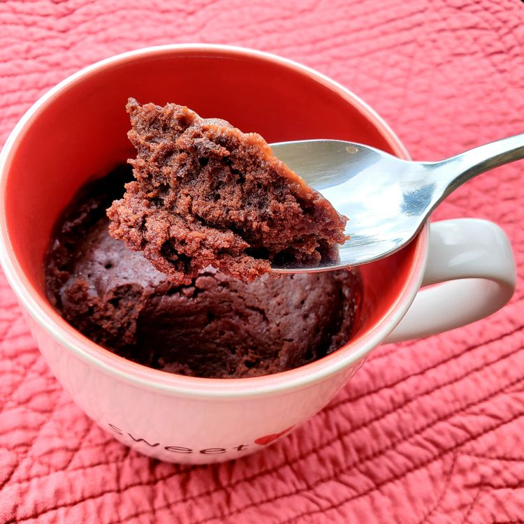

Mug Brownie

Ingredients
- 1/4 cup all-purpose flour
- 1/4 cup sugar
- 2 tablespoons cocoa powder
- 1/8 teaspoon salt
- 1/4 cup water
- 2 tablespoons canola oil
- 1/4 teaspoon vanilla extract
- 1/4 teaspoon cinnamon
Steps
- In a microwave-safe mug, mix the flour, sugar, cocoa powder, and salt.
- Add the water, canola oil, vanilla extract, and cinnamon. Stir until smooth.
- Microwave on high for 1 minute or until the brownie is cooked through.
- Let it cool for a minute before enjoying!
Return to Home